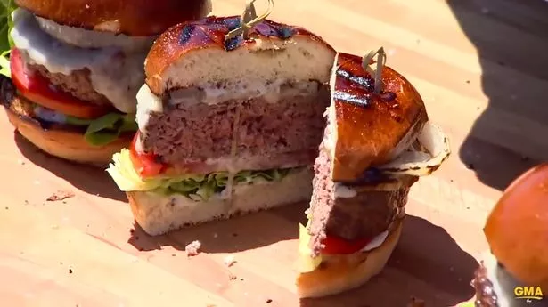

Burger

Ingredients
The Burger
- 1 lb 85/15 ground beef (chuck and brisket)
- 2 oz frozen unsalted butter
- 1 tbs granulated garlic or garlic powder
- 1.5 tbsp Maldon salt
- 1 tbsp fresh cracked black pepper
- 1 tbsp olive olive
- 2 slices swiss cheese
For the Toppings
- 2 large portabella mushroom caps, with stem and gills taken off
- 2 large eggs
- 1 tbsp olive oil
- 4 slices thick applewood smoked bacon
- 1 cup baby rocket
- 1 plum tomato, cut
- Maldon salt and cracked black pepper
The Buns
- 2 brioche burger buns
- Butter for toasting
Siracha Mayo
- 1/4 cup mayonnaise
- 2 tbsp siracha sauce
- Pinch of salt